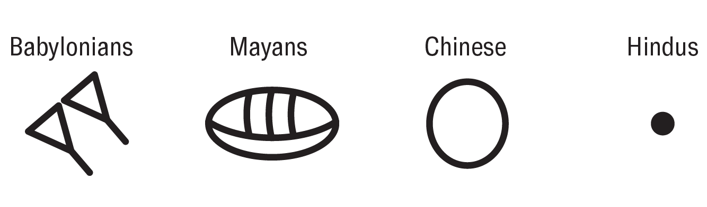

Base systems, positional notation and zero
The first use of number systems
As time passed, other places faced the problem of not being able to count large numbers, so they started making their own number systems. The earliest number systems were the Mesopotamian base 60 system and the Egyptians with their base 10 system (not like our base 10 system). There was one problem, though. If they wanted to write big numbers, they would have to write multiple different symbols and add them together, so because of this problem, positional notation was discovered.

The first use of Positional notation
Positional notation is a system where each number's value depends on its position in the whole number. Say 120, for example, the 1 would have a value of 100, the 2 would have a value of 20, and the 0 would just have a value of 0. An example of a number system that did not use positional notation was the Roman numerals. Instead of writing 120 as we do now, they would write it like 100+20+0. Imagine how long it would take to write longer numbers. The first to figure out positional notation were the Chinese, the Babylonians, and the Aztecs. But one thing that kept them one step away from making the perfect system was the fact that they did not have the concept of zero as a number, instead of just a simple placeholder. Take, for example, the Babylonian system, where they used a space to create an empty position in their system. Sure, this worked, but there would still be problems when differentiating certain numbers.

The first use of "zero"
Why should there be a number for something that has no value? In that era, I would also agree with that logic, but in AD 628, the first known appearance of zero was found in the Brahmasphutasiddhanta, the work of Brahmagupta, an Indian mathematician. His work includes rules for manipulating positive and negative numbers, methods for solving square roots and linear and quadratic equations, rules for summing, and some theorems he developed.
